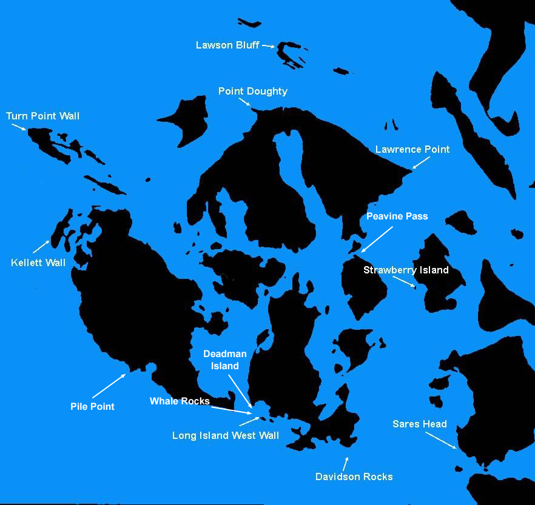

Local Sites
Local Sites
San Juan Islands
The San Juan Islands are a picturesque archipelago located between Puget Sound and the Canadian border. Hundreds of islands and reefs provide incredible diving opportunities in semi-protected waters. Dramatic rock walls, boulder fields, and rocky reefs characterize the San Juan Island dive sites highlighted in this guide.
The San Juan Islands are a picturesque archipelago located between Puget Sound and the Canadian border. Hundreds of islands and reefs provide incredible diving opportunities in semi-protected waters. Dramatic rock walls, boulder fields, and rocky reefs characterize the San Juan Island dive sites highlighted in this guide.
I typically make day trips to the San Juan Islands. The drive north from Seattle to the boat launch at either Washington Park or Cornet Bay takes just under two hours. I can be at any point within the San Juan Islands within 90 minutes from either ramp, weather and waves permitting.
Underwater visibility within the San Juan Islands varies greatly. Many of the sites near Deception Pass are stricken with silt laden run-off from rivers. This murky run-off often reduces visibility to 10-20 feet at some sites in the Rosario Strait, such as Sares Head. The same silty conditions are true of many dive sites in the middle of the San Juan Islands.
The dive sites along the outside perimeter of the San Juan Islands are a much different story. The east side of San Juan Island, south side of Lopez Island, and north side of Orcas Island are adjacent to large expanses of open water that allow sediments to settle out. Most of the San Juan Island dive sites in this guide are located in these perimeter areas where visibility is better.
The San Juan Islands offer a wide variety of amenities. Friday Harbor (San Juan Island) and Anacortes (Fidalgo Island) offer full service marinas and provide almost any supplies a boater or diver might need, including air fills. Roache Harbor (San Juan Island), Deer Harbor (Orcas Island), and Rosario (Orcas Island) also offer amenities, but are more resort oriented. If getting back to nature is more your style, state parks on Sucia, Patos, Matia, Jones, James, Doe, Turn, Stuart, Barnes and Clark Islands may be more to your liking. These parks offer tent camping, toilets, fire pits, and mooring buoys. Some offer fresh water. The parks on Sucia, Jones, James, Stuart, and Doe Islands provide limited dock space, although some of the docks are pulled in winter months.
Underwater visibility within the San Juan Islands varies greatly. Many of the sites near Deception Pass are stricken with silt laden run-off from rivers. This murky run-off often reduces visibility to 10-20 feet at some sites in the Rosario Strait, such as Sares Head. The same silty conditions are true of many dive sites in the middle of the San Juan Islands.
The dive sites along the outside perimeter of the San Juan Islands are a much different story. The east side of San Juan Island, south side of Lopez Island, and north side of Orcas Island are adjacent to large expanses of open water that allow sediments to settle out. Most of the San Juan Island dive sites in this guide are located in these perimeter areas where visibility is better.
The San Juan Islands offer a wide variety of amenities. Friday Harbor (San Juan Island) and Anacortes (Fidalgo Island) offer full service marinas and provide almost any supplies a boater or diver might need, including air fills. Roache Harbor (San Juan Island), Deer Harbor (Orcas Island), and Rosario (Orcas Island) also offer amenities, but are more resort oriented. If getting back to nature is more your style, state parks on Sucia, Patos, Matia, Jones, James, Doe, Turn, Stuart, Barnes and Clark Islands may be more to your liking. These parks offer tent camping, toilets, fire pits, and mooring buoys. Some offer fresh water. The parks on Sucia, Jones, James, Stuart, and Doe Islands provide limited dock space, although some of the docks are pulled in winter months.
Click on a dive site name on the map to view the dive profile.

Local Site Maps
Emerald Diving
Explore the coastal and inland waters of
Washington and BC
Explore the coastal and inland waters of
Washington and BC